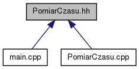

Dokumentacja pliku PomiarCzasu.hh
Definicja modułu odpowiedzialnego za pomiar czasu algorytmu. Więcej...
#include "main.hh"
Wykres zależności załączania dla PomiarCzasu.hh:

Ten wykres pokazuje, które pliki bezpośrednio lub pośrednio załączają ten plik:

Idź do kodu źródłowego tego pliku.
Funkcje | |
| timespec | diff (timespec start, timespec end) |
| Definicja funkcji obliczajacej roznice pomiedzy dwoma strukturami czasu. | |
| void | PomiarCzasu (string FileName) |
| Definicja funkcji dokonujacej pomiaru czasu dzialania kazdego z algorytmow. | |
Opis szczegółowy
Plik zawiera deklaracje funkcji odpowiedzialnych za obliczanie czasu wykonywania sie kazdego z algorytmow.
Definicja w pliku PomiarCzasu.hh.
Dokumentacja funkcji
| timespec diff | ( | timespec | start, |
| timespec | end | ||
| ) |
- Parametry:
-
[in] start - moment rozpoczecia dzialania algorytmu [in] end - moment zakonczenia dzialania algorytmu
- Zwraca:
- Zwraca roznice pomiedzy dwoma strukturami czasu
Definicja w linii 14 pliku PomiarCzasu.cpp.
| void PomiarCzasu | ( | string | FileName | ) |
- Parametry:
-
[in] FileName - plik zawierajacy zestaw danych do przetworzenia
- Zwraca:
- Funkcja nie zwraca zadnej wartosci.
Definicja w linii 28 pliku PomiarCzasu.cpp.